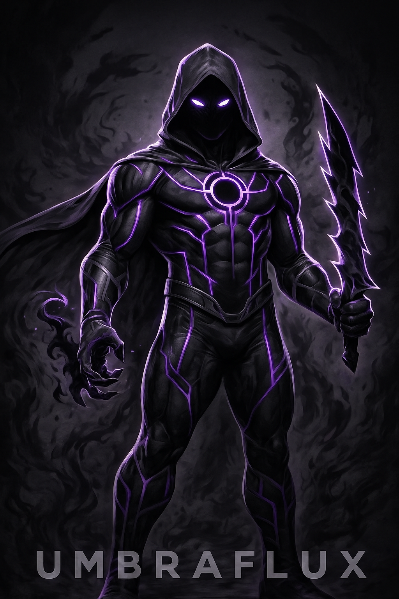

El Dr. Elías Corvin fue uno de los físicos teóricos más brillantes de su generación, obsesionado con descubrir cómo aprovechar la misteriosa materia oscura para crear una fuente de energía limpia e ilimitada.
Durante la prueba final de su generador cuántico, una inestabilidad inesperada provocó una implosión energética. En lugar de morir, Elías quedó fusionado con un fragmento de sombra cuántica, una forma de energía desconocida que alteró su cuerpo y mente para siempre.
UmbraFlux usa sus poderes para proteger a otros. Representa la lucha interna entre luz y oscuridad, la búsqueda de redención, el poder que debe controlarse y a quienes protegen desde las sombras sin buscar reconocimiento.
Colores corporativos: Negro y morado.
